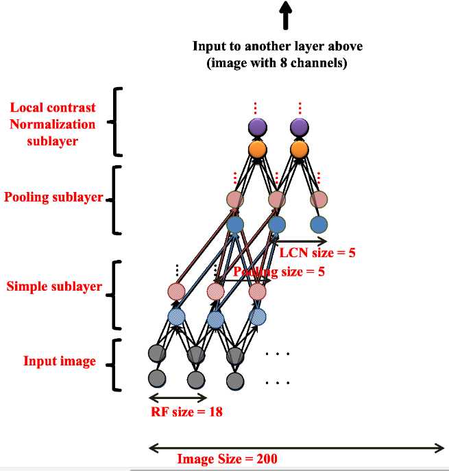

Restricted Boltzmann machines (optional)
Structure of a RBM
Auto-encoders are not the only feature extractors that can be stacked.
Restricted Boltzmann Machines (RBM, (Hinton et al., 2006)) are generative stochastic artificial neural networks that can learn a probability distribution of their inputs. Their neurons form a bipartite graph with two groups of reciprocally connected units:
- the visible units \mathbf{v} (the inputs)
- the hidden units \mathbf{h} (the features or latent space).
Connections are bidirectional between \mathbf{v} and \mathbf{h}, but the neurons inside the two groups are independent from each other (restricted). The goal of learning is to find the weights allowing the network to explain best the input data.

RBMs are a form of autoencoder where the input \rightarrow feature weight matrix is the same as the feature \rightarrow output matrix. There are two steps:
- The forward pass P(\mathbf{h} | \mathbf{x}) propagates the visible units activation to the hidden units.
- The backward pass P(\mathbf{x} | \mathbf{h}) reconstructs the visible units from the the hidden units.
If the weight matrix is correctly chosen, the reconstructed input should “match” the original input: the data is explained.

The visible and units are generally binary units (0 or 1), with a probability defined by the weights and biases and the logistic function:
P(h_j = 1 | \mathbf{v}) = \sigma( \sum_i W_{ij} \, v_i + c_j)
P(v_i = 1 | \mathbf{h}) = \sigma(\sum_i W_{ji} \, h_j + b_i )
The weight matrix W and the biases \mathbf{b}, \mathbf{c} are the parameters \theta of a probability distribution over the activation of the visible and hidden units.
Minimizing the free energy
The goal is to find the parameters which explain best the data (visible units), i.e. the ones maximizing the log-likelihood of the model for the data (\mathbf{v}_1, \ldots, \mathbf{v}_N). We use maximum likelihood estimation (MLE) to maximize the log-likelihood of the model:
\max_{\theta} \, \mathcal{L}(\theta) = \mathbb{E}_{\mathbf{v} \sim \mathcal{D}} [ \log \, P_\theta(\mathbf{v}) ]
In practice, MLE is not tractable in a RBM, as we cannot estimate the joint probability P(\mathbf{v}, \mathbf{h}) of \mathbf{v} and \mathbf{h} (too many combinations are possible).
P(\mathbf{v}) = \sum_\mathbf{h} P(\mathbf{v}, \mathbf{h})
The main trick in energy-based models is to rewrite the probabilities using an energy function E(\mathbf{v}, \mathbf{h}):
P(\mathbf{v}) = \sum_\mathbf{h} P(\mathbf{v}, \mathbf{h}) = \dfrac{\sum_\mathbf{h} \exp^{-E(\mathbf{v}, \mathbf{h})}}{\sum_{\mathbf{v}, \mathbf{h}} \exp^{-E(\mathbf{v}, \mathbf{h})}} = \dfrac{1}{Z} \sum_\mathbf{h} \exp^{-E(\mathbf{v}, \mathbf{h})}
where:
Z = \sum_{\mathbf{v}, \mathbf{h}} \exp^{-E(\mathbf{v}, \mathbf{h})} = \sum_{\mathbf{v}} P(\mathbf{v}) \, \sum_{\mathbf{h}} \exp^{-E(\mathbf{v}, \mathbf{h})}
is the partition function (a normalizing term).
The probabilities come from a Gibbs distribution (or Boltzmann distribution) parameterized by the energy of the system. This is equivalent to a simple softmax over the energy…
Having reformulated the probabilities in terms of energy:
P(\mathbf{v}) = \frac{1}{Z} \sum_\mathbf{h} \exp^{-E(\mathbf{v}, \mathbf{h})}
we can introduce the free energy of the model for a sample \mathbf{v} (how surprising is the input \mathbf{v} for the model):
\mathcal{F}(\mathbf{v}) = - \log \, \sum_\mathbf{h} \exp^{-E(\mathbf{v}, \mathbf{h})}
The log-likelihood of the model for a sample \mathbf{v} of the training data (\mathbf{v}_1, \ldots, \mathbf{v}_N) becomes:
\log \, P(\mathbf{v}) = \log \, \frac{1}{Z} \sum_\mathbf{h} \exp^{-E(\mathbf{v}, \mathbf{h})} = - \mathcal{F}(\mathbf{v}) + \log Z = - \mathcal{F}(\mathbf{v}) + \sum_{\mathbf{v}} P(\mathbf{v}) \, \mathcal{F}(\mathbf{v})
Note that the second term sums over all possible inputs \mathbf{v}. Maximizing the log-likelihood of the model on the training data can be done using gradient ascent by following this gradient:
\nabla_\theta \mathcal{L}(\theta) = \mathbb{E}_{\mathbf{v}} [\nabla_\theta \log \, P(\mathbf{v}_i)] = \mathbb{E}_{\mathbf{v}} [ - \nabla_\theta \mathcal{F}(\mathbf{v}) + \sum_{\mathbf{v}} P(\mathbf{v}) \nabla_\theta \mathcal{F}(\mathbf{v})]
The free energy for a RBM with binary neurons is fortunately known analytically:
\mathcal{F}(\mathbf{v}) = - \sum_i b_i \, v_i - \sum_j \log (1 + \exp^{\sum_i W_{ij} \, v_i + c_j})
so finding the gradient w.r.t \theta = (W, \mathbf{b}, \mathbf{c}) of the first term on the r.h.s (the free energy of the sample) is easy:
\nabla_\theta \log \, P(\mathbf{v}) = - \nabla_\theta \mathcal{F}(\mathbf{v}) + \sum_{\mathbf{v}} P(\mathbf{v}) \nabla_\theta \mathcal{F}(\mathbf{v})
In particular, the gradient w.r.t the matrix W is the outer product between \mathbf{v} and P(\mathbf{h} | \mathbf{v}):
\nabla_W \mathcal{F}(\mathbf{v}) = - \mathbf{v} \times P(\mathbf{h} | \mathbf{v})
The problem is the second term: we would need to integrate over all possible values of the inputs \mathbf{v}, what is not tractable. We will therefore make an approximation using Gibbs sampling (a variant of Monte-Carlo Markov Chain sampling - MCMC) to estimate that second term.

Gibbs sampling consists of repeatedly applying the encoder P(\mathbf{h} | \mathbf{v}) and the decoder P(\mathbf{v} | \mathbf{h}) on the input.
- We start by setting \mathbf{v}_0 = \mathbf{v} using a training sample.
- We obtain \mathbf{h}_0 by computing P(\mathbf{h} | \mathbf{v}_0) and sampling it.
- We obtain \mathbf{v}_1 y computing P(\mathbf{v} | \mathbf{h}_0) and sampling it.
- …
- We obtain \mathbf{v}_k y computing P(\mathbf{v} | \mathbf{h}_{k-1}) and sampling it.
After enough iterations k, we should have a good estimate of P(\mathbf{v}, \mathbf{h}). The k iterations have generated enough reconstructions of \mathbf{v} to cover the distribution of \mathbf{v}.
We set \mathbf{v}_0 = \mathbf{v} on a training sample and let Gibbs sampling iterate for k iterations until we obtain \mathbf{v}_k = \mathbf{v}^*. Contrastive divergence (CD-k, (Hinton and Salakhutdinov, 2006)) shows that the gradient of the log-likelihood can be approximated by:
\begin{align} \nabla_W \log \, P(\mathbf{v}) & = - \nabla_W \mathcal{F}(\mathbf{v}) + \sum_{\mathbf{v}} P(\mathbf{v}) \nabla_W \mathcal{F}(\mathbf{v}) \\ & \approx \mathbf{v} \times P(\mathbf{h} | \mathbf{v}) - \mathbf{v}^* \times P(\mathbf{h} | \mathbf{v}^*) \\ \end{align}
The gradient of the log-likelihood is the difference between the initial explanation of \mathbf{v} by the model, and its explanation after k iterations (relaxation). If the model is good, the reconstruction \mathbf{v}^* is the same as the input \mathbf{v}, so the gradient is zero. An input \mathbf{v} is likely under the RBM model if it is able to reconstruct it, i.e. when it is not surprising (the free energy is low). In practice, k=1 gives surprisingly good results, but RBMs are very painful to train (hyperparameters)…
Deep Belief Networks = stacked RBMs
A Deep Belief Network (DBN) is a simple stack of RBMS, trained using greedy layer-wise learning. The “bottom” parts of the DBM become unidirectional when learning the top part.

Andrew Ng and colleagues (Google, Stanford, (Le, 2013)) trained a deep belief network on color images (200x200) taken from 10 million random unlabeled Youtube videos. Each layer was trained greedily. They also used a couple of other tricks (receptive fields, contrast normalization). Training was distributed over 1000 machines (16.000 cores) and lasted for three days. There was absolutely no task: the network just had to watch youtube videos. After learning, they visualized what the neurons had learned.

After training, some neurons had learned to respond uniquely to faces, or to cats, without ever having been instructed to. The network can then be fine-tuned for classification tasks, improving the pre-AlexNet state-of-the-art on ImageNet by 70%.